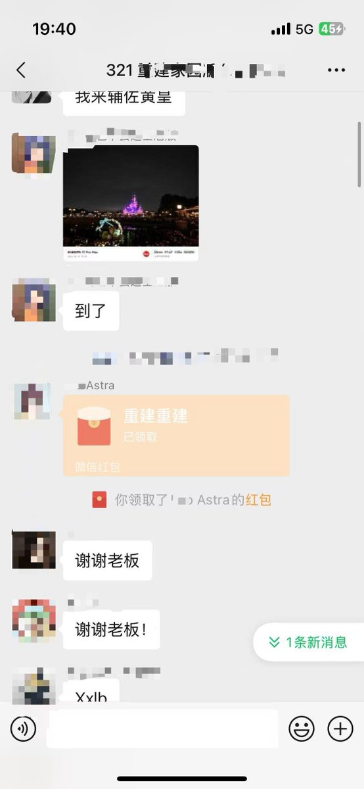

雪秋小可爱
@XUEQIUxka
@GMwalletHK @0xAstraSpark 为什么我不在

GM Wallet 华语
@GMwalletHK
GM，来了就是打工的！
你来了GM，就变成给 @0xAstraSpark 打工的了！
我真服了啊，刚下班看到这个坏消息，我不想多说，谁没领到这个红包，歪脖三白混了。
你们进的321怎么这么牛逼，怎么我进的都是天天只会复制粘贴的😭
晚点发一条声明，有亿点重要的，记得点个小铃铛哦🫶 https://t.co/YCIY9TxtTy